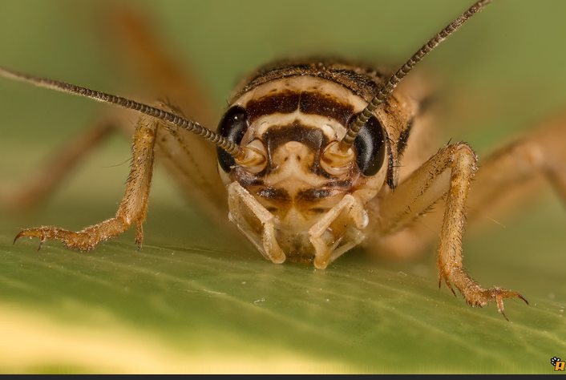

Es un insecto de cuerpo cilíndrico y coloración amarillenta o marrón claro, con tres bandas oscuras en la cabeza. Presenta antenas largas, patas posteriores adaptadas para el salto y órganos auditivos en las tibias delanteras. Los machos producen sonidos mediante la fricción de sus alas para atraer a las hembras. Tiene hábitos principalmente nocturnos y alimentación omnívora, consumiendo restos vegetales y materia orgánica.